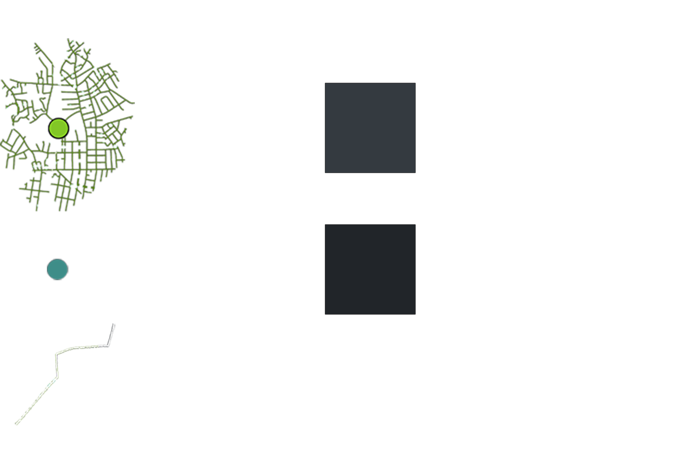
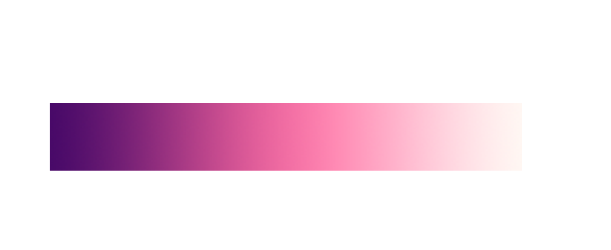

Mapping Food Accessibility
Greater Boston, Massachusetts and the United States:
Access to nutritious and affordable food is essential to the wellbeing of every community. Unfortunately, even in the United States there is a lack of access to healthy and affordable food impacting a significant portion of communities.
The USDA defines “food access” as: Limited access to supermarkets, supercenters, grocery stores, or other sources of healthy and where low-cost fast food may make it less convenient for some Americans to eat a healthy diet (USDA-ERS, 2015 March 11).
Boston Supermarkets Service Networks
This first map is an overview of the food retail environment by visualizing accessibility: walkability according to 1 mile service networks for each supermarket as well as limited access to bus lines. 
Distance can be a barrier to access healthy food. Available mode of transportation and wealth level of the neighborhood are also determining factors since supermarkets with a lucrative drive, tend to open in high income neighborhoods.
Mapping different types of food store in contrast to wealth by census tract, is another approach to identify food areas that lack healthy food sources. Retailers that offer fresh food increase the food access, however, price and affordability may still be a barrier.
Food Access in Massachusetts
- Click on tract areas or hover over circles for details.
- Zoom with scroll, click and drag to move the map.
- Use the filters below to hide or show different types of food resources:
Restaurants
Convenience stores
Fast food
Farmer's markets

Food access impacts most of the populations in Massachusetts. It is a challenge especially for low-income communities, people of color, seniors, and people with disabilities (Jamie Fanous, 2016).
Food Deserts in the U.S.
The USDA studies of food access are done according to census tracts, which are based on population (between 1,200 and 8,000 people per tract). An urban census tract can portray a neighborhood, and a rural census tract, an entire town (U.S. Census Bureau, 2012).
- Hover over food desert tract areas for details.
- Click and drag to move the map, zoom with scroll
This limited mapping of food access according to geographic locations of supermarkets and income by tract can only reveal the tip of the problem.
Other limitations in this kind of study are the availability and reliability of data, localization of food access models for specific communities, regions, and even other states (Jamie Fanous, 2016).
Nutritional contrast
While fast food spots don’t offer high nutritional food, convenience stores offer limited goods for prices on average higher than a supermarket (Ver Ploeg, 2010, p. iv). Studies reveal that limited access to good food causes many negative health challenges, such as obesity and high blood pressure (Ver Ploeg, 2010; Feeding America, 2016).Slide to compare food retail

“Much more goes into food access than can ever be captured by a GIS map,” says Tim Stallmann, a Ph.D. student in geography at the University of North Carolina and a member of the Counter Cartographies Collective. “There’s a whole dimension around money and differential access to stores, how different stores make different groups of people feel welcomed. There’s the amount of time folks have to go shopping in the first place, and when they have it” (Anna Lena Phillips, 2011).
It will take real engagement with the people to better understand experiences of food access.
Location exploration
Explore a food desert in Masachusetts in contrast to an area with high food accessibility.